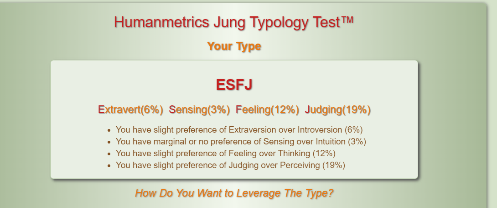
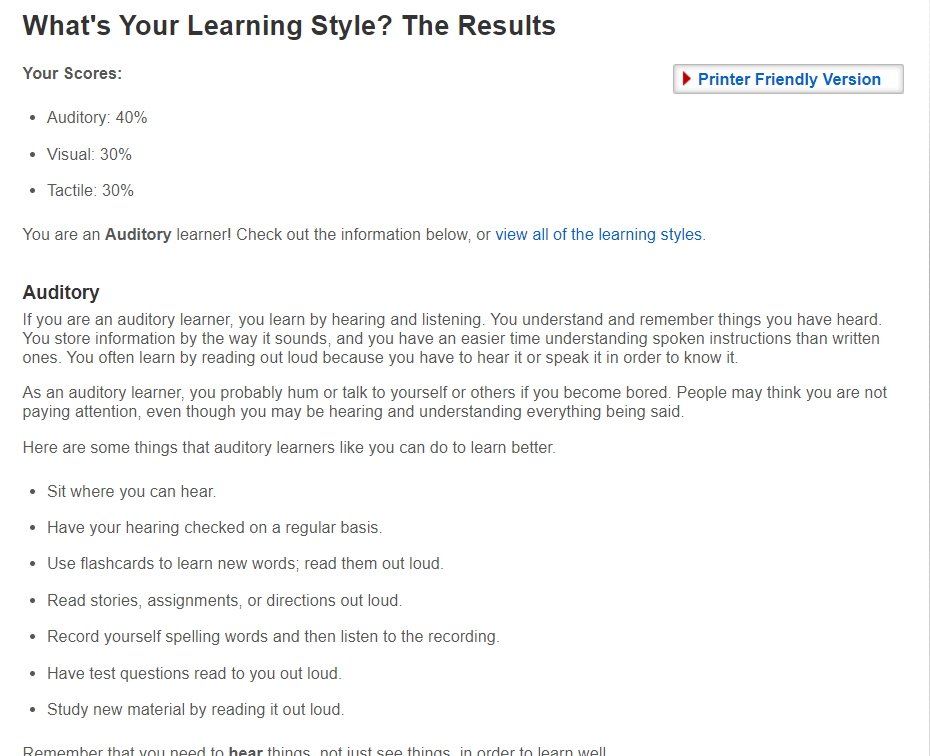
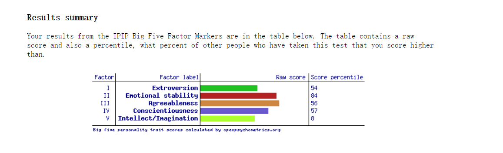

Welcome to my profile
I'm RMIT student, this is my first Web page
My name: Chenhao Lu
My student number:3699365
My Email:s3699365@student.rmit.edu.au
My Moblie:0408459338
Introduction
I come from China. I like listening to music and watching movies.
In my spare time, I play games occasionally.
I have great expectations for studying abroad at RMIT, even though I can't go out during the epidemic.
I also hope to meet many friends from different countries and cultures in the online course.
Interest in Information technology
My interest in IT comes from playing computer games and watching social media sites when I was young.When I was in high school, my parents bought me my first computer, and I liked to take it apart to see the hardware inside. Gradually, I became interested in how to build a website and games.I have learned the knowledge of IT in high school, although IT was many years ago, so now I am not good at the foundation.
The reason why I choose RMIT is that IT has a good ranking in Australia, especially in terms of IT. After graduation, IT will also be very helpful for me to find a job.At the same time, I saw on the Internet that THE learning and living environment of RMIT was very good, so I chose RMIT in the hope that I could learn the knowledge I wanted to learn here and have a wonderful life abroad.
Personal Profile
Myers-Briggs Test
My results from the (MBTI)Myers-Briggs type indicator test indicate that I am ESFJ.
According to the results, I prefer to feel rather than think, which is what I need to improve, because feeling can't give me the right answer, I have to work hard to improve my subjective thinking ability.
ESFJLearning Style Test
The results show that i am Auditor. Auditory at 40%, 30% visual, 30% tactile.
According to the test results, I am better suited to learning by listening.I do understand the teacher's verbal instructions better than the written ones.
Learning StyleThe Big Five Personality Traits
This is my results.
As a result, I tend to be more extroverted, which is more suitable for getting along with people and working in a team.
This is of great benefit to me, and I can better play my social skills in the team.However, I am not good at imagination. While listening to the opinions of others, I should also give play to my imagination and exercise my imagination ability.
Big 5 FactorsIdea job
As for my ideal career in the future, I want to engage in the game programming industry, because I am very interested in game programming, so I want to enter this field and learn more knowledge about programming. Game programming refers to the use of computer programming languages, such as C++, Java, etc., to write games.At present, it is mainly divided into end game and mobile game. I have been interested in games since I came into contact with them. The more important reason is that my friend who is learning game programming edited a very simple little game by himself through the programming knowledge he learned. Although the game is small and simple, it is a great sense of achievement for those who like this industry.I also consulted him about this knowledge, which further confirmed that I wanted to work in the game programming industry. Although the mainstream of the game is mobile game, I prefer to engage in the programming work of the game, because I think the game can better reflect the whole game. Compared with the expensive price of the client game, most mobile game is free. Moreover, mobile game is fundamentally different from the client game in terms of operation cost. The research and development cost of mobile game is lower, but the operation cost is higher than that of the client game.Mobile game is widely available and has a large number of users, so it tends to benefit more than the game.Most end games rely on one-time consumption to make profits, and make profits according to later updated content. First of all, game programming, computer programming language is the foundation, and then to understand art and music.Because game manufacturers in the release of the game, the first thing to attract users is the game music and screen, the second is the game.A good game's music and graphics can greatly affect the game's sales.In addition, knowing the game platform, such as PS, Xbox, Will, etc., and knowing the audience of players on different platforms can ensure the sales of the game. At present, China's domestic end game is also in the stage of development. Integrating some Chinese martial arts novels and ancient stories into the end game can greatly increase the interest of Chinese game consumers. However, due to the huge profits brought by technology and mobile game, investors are more inclined to mobile game such high-interest projects.If the project succeeds, it will be a big step forward for China's client game industry.